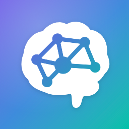

Second Brain Map · Last updated 25 October 2026
This policy is in English and applies to every language version of the app. Політика конфіденційності англійською; вона стосується всіх мовних версій програми. Политика конфиденциальности на английском; она относится ко всем языковым версиям приложения.
Second Brain Map ("Brain Map", "the app") is made by Rinat Maltsev. In short: the app collects no data. There are no accounts, ads, analytics or tracking, all of the AI runs on your iPhone, and your notes stay on your device and in your own iCloud. The developer can't read them.
Everything you capture (text, voice notes and their transcripts, photos and the text recognized in them, links, tags, titles, summaries, connections and reminders) is stored on your iPhone. If you turn on iCloud sync, the app copies it through Apple's iCloud (CloudKit) to your private iCloud database, so it's available on your other devices. Only your Apple Account can read that database; the developer has no access to it. Apple's privacy policy applies to iCloud.
You can choose to share a note or a project with people you invite. Brain Map then uses Apple's iCloud sharing (CloudKit): the shared note or project, with its notes and tasks, is stored in your iCloud and made available to the people you invited, with the permission you chose (view only or can make changes). They see it in their own copy of Brain Map. You can remove people or stop sharing at any time; anyone can leave something shared with them. Nothing is ever shared unless you invite someone, there is no public profile or feed, and the developer can't see shared content either.
Calendar features are optional and off until you turn them on. If you turn on "Show in Calendar", Brain Map adds the due dates of your tasks and projects (and, if you choose, note reminders) to a "Brain Map" calendar on your iPhone, which your calendar account may sync like any other calendar. If you turn on linking notes to meetings, Brain Map reads the title and time of the event happening when you capture a note, on your iPhone, so you can attach it to that note. Calendar data never goes to the developer.
Brain Map's "AI" runs entirely on your iPhone:
No note, recording, photo or question is sent to the developer or to any third-party AI service.
When you save a link, your iPhone loads that page directly from its website to get its title and preview image, the same way Safari would. Nothing goes through the developer. The website's own privacy policy applies to that request.
Widgets show your recent notes from a small file kept on your iPhone, in the app's private storage. Notes you add from the share sheet, Siri, Shortcuts or Control Center are queued on your iPhone until Brain Map files them. None of this leaves your device (except through your own iCloud sync, as above).
Brain Map asks for the microphone and speech recognition (voice notes and voice questions), the camera (photo notes), notifications (reminders you set) and calendars (only if you turn on a calendar feature) only when you first use those features. Everything else works without them, and you can change them any time in Settings.
The app contains no advertising, analytics, crash-reporting or tracking code, doesn't use the advertising identifier, and has no server of its own. In the App Store's terms: Data Not Collected.
The app is suitable for all ages. It doesn't collect personal information from anyone, including children.
You can export all your notes as Markdown or JSON from the app's Settings. Delete any note in the app; deleting it on one device removes it from your iCloud and your other devices. To remove everything, delete the app, and delete its iCloud data under Settings › Apple Account › iCloud › Manage Storage.
If this policy changes, the new version will be posted on this page with a new date.
Questions about privacy: rinatjkeee666@gmail.com